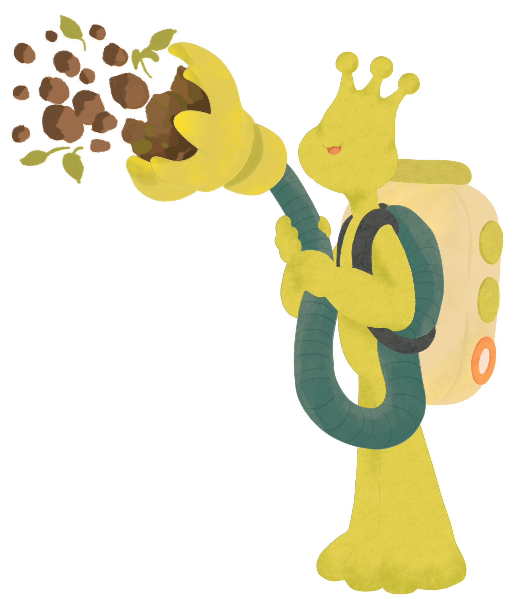
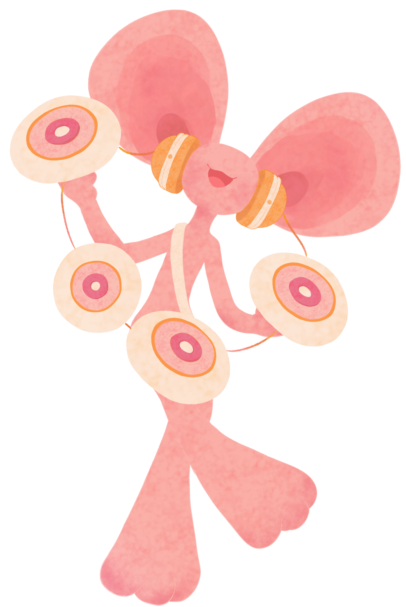

CHIPPY
〜 土を掘る人 〜
地底で家を作るために、土を除去する仕事をしているよ。 力持ちでまっすぐな性格。
職業：土吸収員
住んでいる地層：上層
地底人との暮らし
あなたはどうやって地底生活を始める？
地底人たちに呼んでもらう名前を教えてね！
地底のどこかで暮らす5人の地底人。
それぞれの仕事や好きなもの、住んでいる地層がちがうよ。
気になる子を選んで、ストーリーを見てみよう！

〜 土を掘る人 〜
地底で家を作るために、土を除去する仕事をしているよ。 力持ちでまっすぐな性格。
職業：土吸収員
住んでいる地層：上層

〜 音を集める人 〜
地底に響くいろんな音を集めているよ。 歌うことや音楽が大好き。
職業：音の採集家
住んでいる地層：中層
〜 植物のお医者さん 〜
地底の植物たちの健康を守るお医者さん。 植物と話せるよ。
職業：植物の医者
住んでいる地層：深層

〜 建築家 〜
地底に素敵な家を建てるのが夢！ みんなの暮らしをつなぐ建築家。
職業：建築家
住んでいる地層：？？？
🔒 3つのルートを達成すると解放されます土吸収員・上層
地底で家を作るために、土を除去する仕事をしているよ。力持ちでまっすぐな性格。
音の採集家・中層
地底に響くいろんな音を集めているよ。歌うことや音楽が大好き。
植物の医者・深層
地底の植物たちの健康を守るお医者さん。植物と話せるよ。
建築家
地底に素敵な家を建てるのが夢。みんなの暮らしをつなぐ建築家。
地底の案内人
地上から来た人を、地底の暮らしへ案内するよ。ガイドブックをいつも持っている。
まだ会っていない地底人
画像と設定は、あとから追加するよ。
まだ会っていない地底人
画像と設定は、あとから追加するよ。
CHIPPY
CHIPPY
友情ポイントを25%もらったよ。
撮影ごほうび
今日の一枚を撮った記念に、星のしるしをプレゼント。
地底生活の続きをはじめよう！